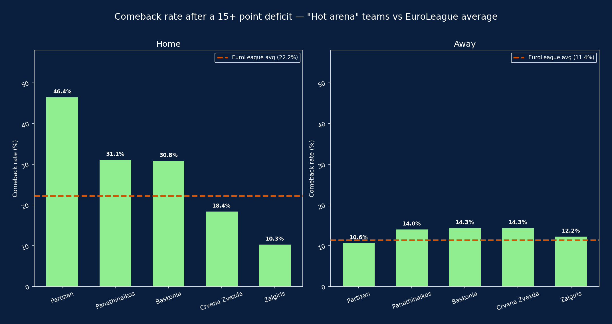

An extension of a Baskonia-focused analysis to five EuroLeague teams known for intense home crowds (Baskonia, Zalgiris, Panathinaikos, Partizan, and Crvena Zvezda), testing whether that reputation shows up in the data.
For each team, in each game, the analysis finds the single worst point deficit faced at any moment, not just at a fixed point like the start of the 4th quarter, but across the entire game. Only games where that deficit reached 15 points or worse are kept, to make sure the comparison is about genuine trouble, not routine fluctuation.
From that low point onward, a game counts as a "comeback" if the team tied the score or took the lead at any point before the final buzzer, not necessarily won. This is a deliberate choice: an earlier version of this analysis (on Baskonia alone) tried defining a comeback as "won after trailing by 10+ at the start of the 4th quarter," but that produced samples too small to say anything reliable, as few as 1-2 qualifying wins per team per venue. Tracking whether a team fought back into contention, rather than whether it ultimately won, produces a large enough sample to compare meaningfully across five teams and nearly two decades of games.
Comeback rate is then compared: home vs away for each team, and each team vs the EuroLeague-wide average.

| Team | Home rate | Away rate | Home vs league avg (22.2%) |
|---|---|---|---|
| Partizan | 46.4% | 10.6% | +24.2 |
| Panathinaikos | 31.1% | 14.0% | +8.9 |
| Baskonia | 30.8% | 14.3% | +8.6 |
| Crvena Zvezda | 18.4% | 14.3% | -3.8 |
| Zalgiris | 10.3% | 12.2% | -11.9 |
The home effect, where it exists, is large. Partizan's home comeback rate is more than four times its own away rate (46.4% vs 10.6%), and more than double the EuroLeague average (22.2%). Panathinaikos and Baskonia both come back from big deficits at home roughly twice as often as they do on the road, and clearly above the league average too. This isn't a marginal gap, it's the difference between "sometimes recovers" and "rarely recovers." By contrast, the away-game numbers across all five teams are tightly bunched between 10.6% and 14.3%, close to the 11.4% league average, suggesting whatever is driving the home numbers is specific to playing at home, not a general trait of these particular teams.
Not every team fits the pattern, though. Crvena Zvezda sits below the league average at home, and Zalgiris is the clearest outlier: its home comeback rate (10.3%) is actually lower than its own away rate (12.2%), the opposite of what the "loud home crowd" hypothesis predicts, and a contrast with Zalgiris's own clear home advantage in effort-based box score stats (rebounds, blocks) found in a separate analysis.
Partizan and Crvena Zvezda are, independently of this analysis, EuroLeague's best-attended teams (around 19-20K and 19K per game, both near 95-99% arena capacity). Their reputation is well-supported by real numbers, not just anecdote. Zalgiris also runs near capacity (around 97%), despite showing the opposite comeback pattern.
Baskonia is the more interesting outlier: despite the second-strongest home comeback effect, its fill rate (around 70%) is close to the EuroLeague average, not exceptional, suggesting the effect, if real, isn't simply about crowd size. For context, Fenerbahce and Anadolu Efes, often assumed to have similarly loud arenas, don't rank among EuroLeague's best-attended teams, running at roughly 75-80% capacity.
Attendance figures are approximate, mostly from the 2023-24 season, sourced from EuroLeague recaps and independent reporting.